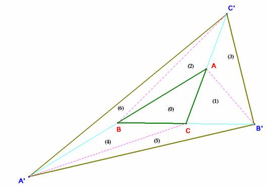

Para el aula
Problema 307
2.- Alrededor de un
triángulo.
Sea ABC un triángulo.
1º) Construye el punto A' simétrico de A en relación a B; el punto B'
simétrico de B en relación a C, y el punto C' simétrico de C en relación a A.
2º) Compara las áreas de los triángulos ABC y A'B'C'
Clapponi, P. (1995): Activité. autour d'un
triangle. Petit X 40, pag. 86. [Clapponi es un seudónimo de Philippe Clarou -
Bernard Capponi].
Solución de Saturnino Campo Ruiz, profesor del IES Fray Luis de León de Salamanca.-

Uniendo los vértices de estos triángulos se
obtienen 6 los triángulos que figuran numerados, además del inicial, (marcado
con (0)). Todos estos triángulos son equivalentes (=tienen igual área) al
triángulo ABC.
El triángulo (1) es equivalente
a (0) por tener igual base (a=BC) e
igual altura.
El (2) es equivalente a (0) por
tener igual base (b=AC) e igual
altura.
El (3) es equivalente a (1) por
tener igual base (b=AC) e igual
altura.
El (4) comparte con el (0) la
base c=AB y la altura desde C.
El (5) y el (4) tienen como base
el lado a=BC y la misma altura desde A’.
Por último el triángulo (0)+(4), o sea, el AA’C y el triángulo (2)+(6) = AA’C’ tienen igual área pues A equidista
de C y de C’,y tienen la misma altura desde A’. De las equivalencias anteriores se concluye que también (6) es
equivalente a (0).
De resultas de todo lo anterior
concluimos que el triángulo A’B’C’ tiene un
área igual a 7 veces la del triángulo ABC.